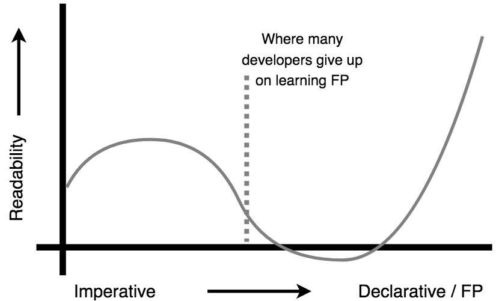

Functional-Light JavaScript
Chapter 1: Why Functional Programming?
Functional programmer: (noun) One who names variables "x", names functions "f", and names code patterns "zygohistomorphic prepromorphism"
James Iry @jamesiry 5/13/15
https://twitter.com/jamesiry/status/598547781515485184
Functional Programming (FP) is not a new concept by any means. It's been around almost the entire history of programming. However, and I'm not sure it's fair to say, but... it sure hasn't seemed like as mainstream of a concept in the overall developer world until perhaps the last few years. I think FP has more been the realm of academics.
That's all changing, though. A groundswell of interest is growing around FP, not just at the languages level but even in libraries and frameworks. You very well might be reading this text because you've finally realized FP is something you can't ignore any longer. Or maybe you're like me and you've tried to learn FP many times before but struggled to wade through all the terms or mathematical notation.
This first chapter's purpose is to answer questions like "Why should I use FP style with my code?" and "How does Functional-Light JavaScript compare to what others say about FP?" After we've laid that groundwork, throughout the rest of the book we'll uncover, piece by piece, the techniques and patterns for writing JS in Functional-Light style.
At a Glance
Let's briefly illustrate the notion of "Functional-Light JavaScript" with a before-and-after snapshot of code. Consider:
var numbers = [4, 10, 0, 27, 42, 17, 15, -6, 58];
var faves = [];
var magicNumber = 0;
pickFavoriteNumbers();
calculateMagicNumber();
outputMsg(); // The magic number is: 42
// ***************
function calculateMagicNumber() {
for (let fave of faves) {
magicNumber = magicNumber + fave;
}
}
function pickFavoriteNumbers() {
for (let num of numbers) {
if (num >= 10 && num <= 20) {
faves.push(num);
}
}
}
function outputMsg() {
var msg = `The magic number is: ${magicNumber}`;
console.log(msg);
}
Now consider a very different style that accomplishes exactly the same outcome:
var sumOnlyFavorites = FP.compose([
FP.filterReducer(FP.gte(10)),
FP.filterReducer(FP.lte(20))
])(sum);
var printMagicNumber = FP.pipe([
FP.reduce(sumOnlyFavorites, 0),
constructMsg,
console.log
]);
var numbers = [4, 10, 0, 27, 42, 17, 15, -6, 58];
printMagicNumber(numbers); // The magic number is: 42
// ***************
function sum(x, y) {
return x + y;
}
function constructMsg(v) {
return `The magic number is: ${v}`;
}
Once you understand FP and Functional-Light, this is likely how you'd read and mentally process that second snippet:
We're first creating a function called
sumOnlyFavorites(..)that's a combination of three other functions. We combine two filters, one checking if a value is greater-than-or-equal to 10 and one for less-than-or-equal to 20. Then we include thesum(..)reducer in the transducer composition. The resultingsumOnlyFavorites(..)function is a reducer that checks if a value passes both filters, and if so, adds the value to an accumulator value.Then we make another function called
printMagicNumber(..)which first reduces a list of numbers using thatsumOnlyFavorites(..)reducer we just defined, resulting in a sum of only numbers that passed the favorite checks. ThenprintMagicNumber(..)pipes that final sum intoconstructMsg(..), which creates a string value that finally goes intoconsole.log(..).
All those moving pieces speak to an FP developer in ways that likely seem highly unfamiliar to you right now. This book will help you speak that same kind of reasoning so that it's as readable to you as any other code, if not more so!
A few other quick remarks about this code comparison:
-
It's likely that for many readers, the former snippet feels closer to comfortable/readable/maintainable than the latter snippet. It's entirely OK if that's the case. You're in exactly the right spot. I'm confident that if you stick it out through the whole book, and practice everything we talk about, that second snippet will eventually become a lot more natural, maybe even preferable!
-
You might have done the task significantly or entirely different from either snippet presented. That's OK, too. This book won't be prescriptive in dictating that you should do something a specific way. The goal is to illustrate the pros/cons of various patterns and enable you to make those decisions. By the end of this book, how you would approach the task may fall a little closer to the second snippet than it does right now.
-
It's also possible that you're already a seasoned FP developer who's scanning through the start of this book to see if it has anything useful for you to read. That second snippet certainly has some bits that are quite familiar. But I'm also betting that you thought, "Hmmm, I wouldn't have done it that way..." a couple of times. That's OK, and entirely reasonable.
This is not a traditional, canonical FP book. We'll at times seem quite heretical in our approaches. We're seeking to strike a pragmatic balance between the clear undeniable benefits of FP, and the need to ship workable, maintainable JS without having to tackle a daunting mountain of math/notation/terminology. This is not your FP, it's "Functional-Light JavaScript".
Whatever your reasons for reading this book, welcome!
Confidence
I have a very simple premise that sort of underlies everything I do as a teacher of software development (in JavaScript): code that you cannot trust is code that you do not understand. The reverse is true also: code that you don't understand is code you can't trust. Furthermore, if you cannot trust or understand your code, then you can't have any confidence whatsoever that the code you write is suitable to the task. You run the program and basically just cross your fingers.
What do I mean by trust? I mean that you can verify, by reading and reasoning, not just executing, that you understand what a piece of code will do; you aren't just relying on what it should do. More often than is perhaps prudent, we tend to rely on running test suites to verify our programs' correctness. I don't mean to suggest tests are bad. But I do think we should aspire to be able to understand our code well enough that we know the test suite will pass before it runs.
The techniques that form the foundation of FP are designed from the mindset of having far more confidence over our programs just by reading them. Someone who understands FP, and who's disciplined enough to diligently use it throughout their programs, will write code that they and others can read and verify that the program will do what they want.
Confidence is also increased when we use techniques that avoid or minimize likely sources of bugs. That's perhaps one of the biggest selling points of FP: FP programs often have fewer bugs, and the bugs that do exist are usually in more obvious places, so they're easier to find and fix. FP code tends to be more bug-resistant -- certainly not bug-proof, though.
As you journey through this book, you will begin to develop more confidence in the code you write, because you will use patterns and practices that are already well proven; and you'll avoid the most common causes of program bugs!
Communication
Why is Functional Programming important? To answer that, we need to take a bigger step back and talk about why programming itself is important.
It may surprise you to hear this, but I don't believe that code is primarily a set of instructions for the computer. Actually, I think the fact that code instructs the computer is almost a happy accident.
I believe very deeply that the vastly more important role of code is as a means of communication with other human beings.
You probably know by experience that an awful lot of your time spent "coding" is actually spent reading existing code. Very few of us are so privileged as to spend all or most of our time simply banging out all new code and never dealing with code that others (or our past selves) wrote.
It's widely estimated that developers spend 70% of code maintenance time on reading to understand it. That is eye-opening. 70%. No wonder the global average for a programmer's lines of code written per day is about 10. We spend up to 7 hours of our day just reading the code to figure out where those 10 lines should go!
We need to focus a lot more on the readability of our code. And by the way, readability is not just about fewer characters. Readability is actually most impacted by familiarity.1
If we are going to spend our time concerned with making code that will be more readable and understandable, FP is central in that effort. The principles of FP are well established, deeply studied and vetted, and provably verifiable. Taking the time to learn and employ these FP principles will ultimately lead to more readily and recognizably familiar code for you and others. The increase in code familiarity, and the expediency of that recognition, will improve code readability.
For example, once you learn what map(..) does, you'll be able to almost
instantly spot and understand it when you see it in any program. But every time
you see a for loop, you're going to have to read the whole loop to understand
it. The syntax of the for loop may be familiar, but the substance of what it's
doing is not; that has to be read, every time.
By having more code that's recognizable at a glance, and thus spending less time figuring out what the code is doing, our focus is freed up to think about the higher levels of program logic; this is the important stuff that most needs our attention anyway.
FP (at least, without all the terminology weighing it down) is one of the most effective tools for crafting readable code. That is why it's so important.
Readability
Readability is not a binary characteristic. It's a largely subjective human factor describing our relationship to code. And it will naturally vary over time as our skills and understanding evolve. I have experienced effects similar to the following figure, and anecdotally many others I've talked to have as well.

You may just find yourself experiencing similar effects as you work through the book. But take heart; if you stick this out, the curve comes back up!
Imperative describes the code most of us probably already write naturally; it's focused on precisely instructing the computer how to do something. Declarative code -- the kind we'll be learning to write, which adheres to FP principles -- is code that's more focused on describing the what outcome.
Let's revisit the two code snippets presented earlier in this chapter.
The first snippet is imperative, focused almost entirely on how to do the
tasks; it's littered with if statements, for loops, temporary variables,
reassignments, value mutations, function calls with side effects, and implicit
data flow between functions. You certainly can trace through its logic to see
how the numbers flow and change to the end state, but it's not at all clear or
straightforward.
The second snippet is more declarative; it does away with most of those aforementioned imperative techniques. Notice there's no explicit conditionals, loops, side effects, reassignments, or mutations; instead, it employs well-known (to the FP world, anyway!) and trustable patterns like filtering, reduction, transducing, and composition. The focus shifts from low-level how to higher level what outcomes.
Instead of messing with an if statement to test a number, we delegate that to
a well-known FP utility like gte(..) (greater-than-or-equal-to), and then
focus on the more important task of combining that filter with another filter
and a summation function.
Moreover, the flow of data through the second program is explicit:
- A list of numbers goes into
printMagicNumber(..). - One at a time those numbers are processed by
sumOnlyFavorites(..), resulting in a single number total of only our favorite kinds of numbers. - That total is converted to a message string with
constructMsg(..). - The message string is printed to the console with
console.log(..).
You may still feel this approach is convoluted, and that the imperative snippet was easier to understand. You're much more accustomed to it; familiarity has a profound influence on our judgments of readability. By the end of this book, though, you will have internalized the benefits of the second snippet's declarative approach, and that familiarity will spring its readability to life.
I know asking you to believe that at this point is a leap of faith.
It takes a lot more effort, and sometimes more code, to improve its readability as I'm suggesting, and to minimize or eliminate many of the mistakes that lead to bugs. Quite honestly, when I started writing this book, I could never have written (or even fully understood!) that second snippet. As I'm now further along on my journey of learning, it's more natural and comfortable.
If you're hoping that FP refactoring, like a magic silver bullet, will quickly transform your code to be more graceful, elegant, clever, resilient, and concise -- that it will come easy in the short term -- unfortunately that's just not a realistic expectation.
FP is a very different way of thinking about how code should be structured, to make the flow of data much more obvious and to help your reader follow your thinking. It will take time. This effort is eminently worthwhile, but it can be an arduous journey.
It still often takes me multiple attempts at refactoring a snippet of imperative code into more declarative FP, before I end up with something that's clear enough for me to understand later. I've found converting to FP is a slow iterative process rather than a quick binary flip from one paradigm to another.
I also apply the "teach it later" test to every piece of code I write. After I've written a piece of code, I leave it alone for a few hours or days, then come back and try to read it with fresh eyes, and pretend as if I need to teach or explain it to someone else. Usually, it's jumbled and confusing the first few passes, so I tweak it and repeat!
I'm not trying to dampen your spirits. I really want you to hack through these weeds. I am glad I did it. I can finally start to see the curve bending upward toward improved readability. The effort has been worth it. It will be for you, too.
Perspective
Most other FP texts seem to take a top-down approach, but we're going to go the opposite direction: working from the ground up, we'll uncover the basic foundational principles that I believe formal FPers would admit are the scaffolding for everything they do. But for the most part we'll stay arm's length away from most of the intimidating terminology or mathematical notation that can so easily frustrate learners.
I believe it's less important what you call something and more important that you understand what it is and how it works. That's not to say there's no importance to shared terminology -- it undoubtedly eases communication among seasoned professionals. But for the learner, I've found it can be distracting.
So this book will try to focus more on the base concepts and less on the fancy fluff. That's not to say there won't be terminology; there definitely will be. But don't get too wrapped up in the sophisticated words. Wherever necessary, look beyond them to the ideas.
I call the less formal practice herein "Functional-Light Programming" because I think where the formalism of true FP suffers is that it can be quite overwhelming if you're not already accustomed to formal thought. I'm not just guessing; this is my own personal story. Even after teaching FP and writing this book, I can still say that the formalism of terms and notation in FP is very, very difficult for me to process. I've tried, and tried, and I can't seem to get through much of it.
I know many FPers who believe that the formalism itself helps learning. But I think there's clearly a cliff where that only becomes true once you reach a certain comfort with the formalism. If you happen to already have a math background or even some flavors of CS experience, this may come more naturally to you. But some of us don't, and no matter how hard we try, the formalism keeps getting in the way.
So this book introduces the concepts that I believe FP is built on, but comes at it by giving you a boost from below to climb up the cliff wall, rather than condescendingly shouting down at you from the top, prodding you to just figure out how to climb as you go.
How to Find Balance
If you've been around programming for very long, chances are you've heard the phrase "YAGNI" before: "You Ain't Gonna Need It". This principle primarily comes from extreme programming, and stresses the high risk and cost of building a feature before it's needed.
Sometimes we guess we'll need a feature in the future, build it now believing it'll be easier to do as we build other stuff, then realize we guessed wrong and the feature wasn't needed, or needed to be quite different. Other times we guess right, but build a feature too early, and suck up time from the features that are genuinely needed now; we incur an opportunity cost in diluting our energy.
YAGNI challenges us to remember: even if it's counterintuitive in a situation, we often should postpone building something until it's presently needed. We tend to exaggerate our mental estimates of the future refactoring cost of adding it later when it is needed. Odds are, it won't be as hard to do later as we might assume.
As it applies to functional programming, I would offer this admonition: there will be plenty of interesting and compelling patterns discussed in this text, but just because you find some pattern exciting to apply, it may not necessarily be appropriate to do so in a given part of your code.
This is where I will differ from many formal FPers: just because you can apply FP to something doesn't mean you should apply FP to it. Moreover, there are many ways to slice a problem, and even though you may have learned a more sophisticated approach that is more "future-proof" to maintenance and extensibility, a simpler FP pattern might be more than sufficient in that spot.
Generally, I'd recommend seeking balance in what you code, and to be conservative in your application of FP concepts as you get the hang of things. Default to the YAGNI principle in deciding if a certain pattern or abstraction will help that part of the code be more readable or if it's just introducing clever sophistication that isn't (yet) warranted.
Reminder, any extensibility point that’s never used isn’t just wasted effort, it’s likely to also get in your way as well
Jeremy D. Miller @jeremydmiller 2/20/15
https://twitter.com/jeremydmiller/status/568797862441586688
Remember, every single line of code you write has a reader cost associated with it. That reader may be another team member, or even your future self. Neither of those readers will be impressed with overly clever, unnecessary sophistication just to show off your FP prowess.
The best code is the code that is most readable in the future because it strikes exactly the right balance between what it can/should be (idealism) and what it must be (pragmatism).
Resources
I have drawn on a great many different resources to be able to compose this text. I believe you, too, may benefit from them, so I wanted to take a moment to point them out.
Books
Some FP/JavaScript books that you should definitely read:
- Professor Frisby's Mostly Adequate Guide to Functional Programming by Brian Lonsdorf
- JavaScript Allongé by Reg Braithwaite
- Functional JavaScript by Michael Fogus
Blogs/sites
Some other authors and content you should check out:
- Fun Fun Function Videos by Mattias P Johansson
- Awesome FP JS
- Kris Jenkins
- Eric Elliott
- James A Forbes
- James Longster
- André Staltz
- Functional Programming Jargon
- Functional Programming Exercises
Libraries
The code snippets in this book largely do not rely on libraries. Each operation that we discover, we'll derive how to implement it in standalone, plain ol' JavaScript. However, as you begin to build more of your real code with FP, you'll soon want a library to provide optimized and highly reliable versions of these commonly accepted utilities.
By the way, you need to check the documentation for the library functions you use to ensure you know how they work. There will be a lot of similarities in many of them to the code we build on in this text, but there will undoubtedly be some differences, even between popular libraries.
Here are a few popular FP libraries for JavaScript that are a great place to start your exploration with:
Appendix C takes a deeper look at these libraries and others.
Summary
You may have a variety of reasons for starting to read this book, and different expectations of what you'll get out of it. This chapter has explained why I want you to read the book and what I want you to get out of the journey. It also helps you articulate to others (like your fellow developers) why they should come on the journey with you!
Functional programming is about writing code that is based on proven principles so we can gain a level of confidence and trust over the code we write and read. We shouldn't be content to write code that we anxiously hope works, and then abruptly breathe a sigh of relief when the test suite passes. We should know what it will do before we run it, and we should be absolutely confident that we've communicated all these ideas in our code for the benefit of other readers (including our future selves).
This is the heart of Functional-Light JavaScript. The goal is to learn to effectively communicate with our code but not have to suffocate under mountains of notation or terminology to get there.
The journey to learning functional programming starts with deeply understanding the nature of what a function is. That's what we tackle in the next chapter.
1Buse, Raymond P. L., and Westley R. Weimer. “Learning a Metric for Code Readability.” IEEE Transactions on Software Engineering, IEEE Press, July 2010, dl.acm.org/citation.cfm?id=1850615.